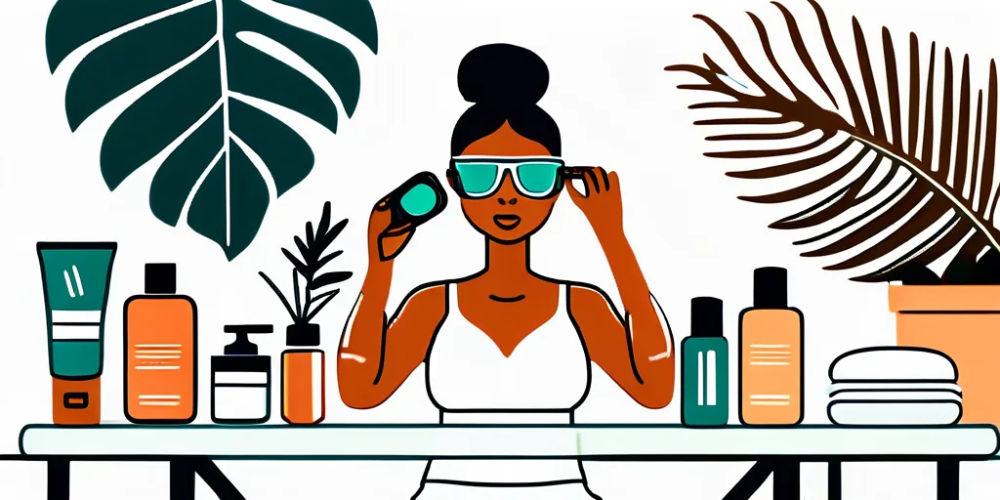
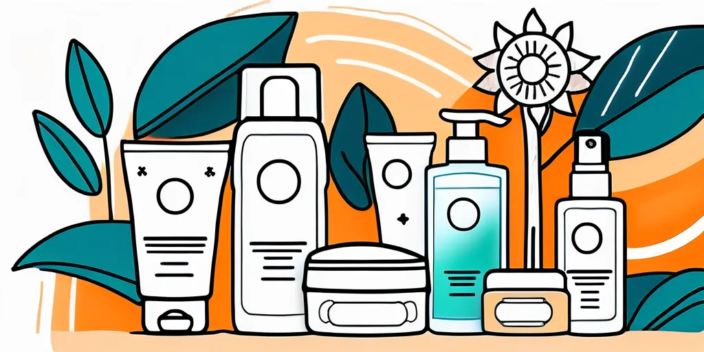
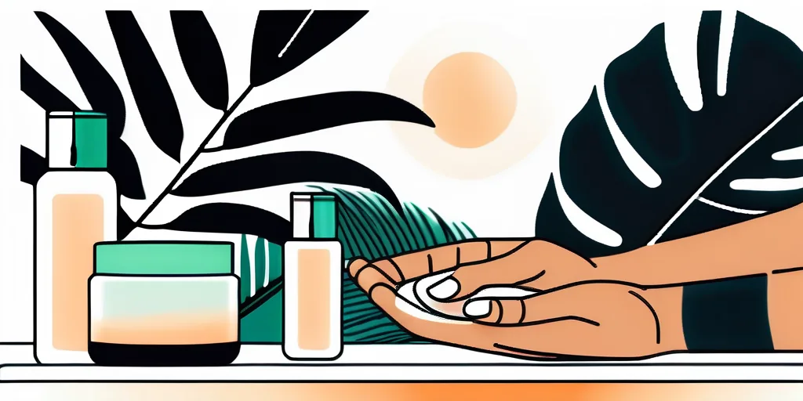

Bronzul frumos și uniform este dorința multor persoane, în special în sezonul cald. Solarul oferă o metodă eficientă și controlată de a obține acea nuanță aurie — fără a depinde de vreme sau de disponibilitatea soarelui. Iată tot ce trebuie să știi pentru rezultate impecabile.
Înțelegerea procesului de bronzare la solar
Ce este bronzarea și cum funcționează?
Bronzarea este un proces biologic natural prin care pielea se întunecă ca răspuns la expunerea la razele UV. Melanina din celulele pigmentare numite melanocite absoarbe razele UV și le convertește în căldură. Cu expuneri repetate, melanocitele eliberează mai multă melanină, întunecând tonul pielii și creând un bronz atractiv și luminos.
Diferența dintre bronzarea la soare și solar
Spre deosebire de bronzarea naturală, solarul îți oferă control deplin asupra nivelului și duratei expunerii. Cabinele profesionale precum megaSun PureEnergy 5.0 din cadrul SUNCLUB combină razele UVA și UVB în proporții calibrate pentru rezultate sigure și eficiente, indiferent de anotimp sau vreme.
Pregătirea corectă pentru ședințe
Exfolierea pielii înainte de bronzare
Exfolierea înainte de expunerea la solar elimină celulele moarte și impuritățile, creând o suprafață uniformă pentru absorbția UV. Folosește un scrub delicat cu mișcări circulare de masaj, insistând pe zonele cu piele mai groasă — coate, genunchi, glezne. Exfolierea regulată promovează și regenerarea celulară și stimulează circulația sângelui.

Hidratarea pielii pentru un bronz uniform
Pielea bine hidratată absoarbe razele UV mai eficient și obține un bronz mai uniform. Aplică o loțiune hidratantă specializată pentru solar cu regularitate înainte de ședințe. Hidratarea corespunzătoare menține elasticitatea și fermitatea pielii, reducând riscul de descuamare sau iritație.
💡 Sfat: Aplică loțiunea de bronzare cu 15-20 de minute înainte de ședință pentru o absorbție optimă și rezultate mai intense.
Protejarea pielii în timpul ședințelor
Evitarea arsurilor și problemelor de piele
Respectă durata de ședință recomandată de personalul salonului — aceasta este calculată în funcție de tipul tău de piele și experiența anterioară de bronzare. Protejează zonele sensibile: poartă întotdeauna ochelari de protecție speciali pentru solar și folosește stickere pentru protejarea areolelor.

Construirea treptată a bronzului
Nu încerca să obții un bronz intens de la prima ședință. Creșterea treptată a duratei sesiunilor permite pielii să se adapteze și produce un bronz mai uniform, mai natural și mai durabil. Personalul SUNCLUB îți va recomanda un program personalizat în funcție de tipul tău de piele.
Îngrijirea pielii după ședințe
Menținerea bronzului
Bronzul frumos și sănătos se menține printr-o hidratare consistentă. Aplică o loțiune hidratantă calmantă după fiecare ședință pentru a preveni deshidratarea și a prelungi durata bronzului. Evită expunerea la soarele direct, mai ales între orele 10:00 și 16:00.

Produse recomandate pentru îngrijire post-bronzare
- Loțiuni hidratante post-tan — formule hrănitoare care mențin umiditatea pielii după expunerea UV
- Produse de menținere a bronzului — conțin ingrediente speciale care prelungesc durata bronzului cu o strălucire sănătoasă
- Seruri cu vitamina C — combat efectele oxidative și luminează tonul pielii
La SUNCLUB, echipa noastră te ajută să construiești un program complet — de la pregătire până la îngrijire — pentru cel mai frumos bronz al tău.
Concluzie
Obținerea unui bronz frumos și sănătos la solar implică mai mult decât simpla expunere la UV. Pregătirea corectă a pielii prin exfoliere și hidratare, alegerea produselor potrivite, protecția adecvată în timpul ședinței și îngrijirea post-bronzare sunt pașii care fac diferența. Urmând aceste recomandări și colaborând cu echipa SUNCLUB, vei obține rezultate care te vor impresiona!